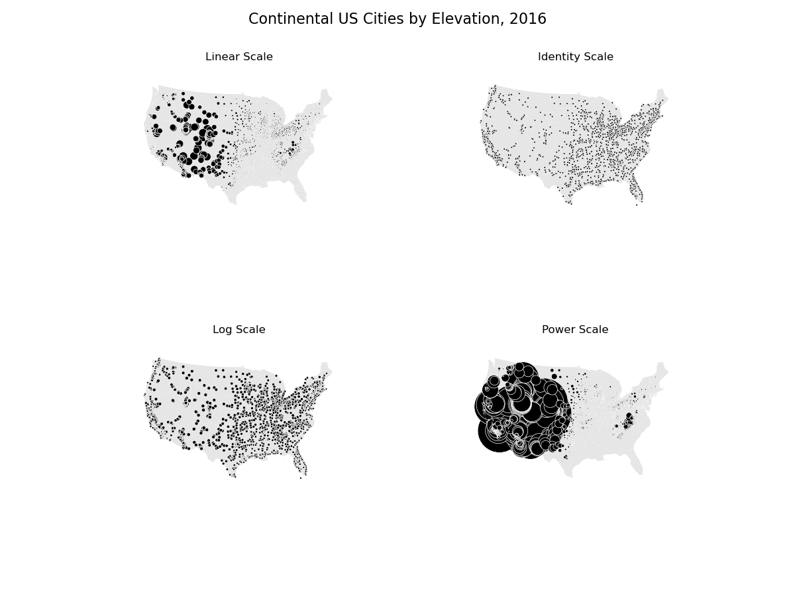

Note
Click here to download the full example code
Pointplot of US city elevations with custom scale functions¶
This example plots United States cities by their elevation. Several different possible scaling functions for determining point size are demonstrated.
The first plot is a default linear-scale one. We can see from the results that this is clearly the most appropriate one for this specific data.
The second plot shows a trivial identity scale. This results in a plot where every city has the same size.
A more interesting scale is the logarithmic scale. This scale works very well when the data in question is log-linear, that is, it is distributed linearly with respect to its own logarithm. In our demonstratory case the data is linear and not logorithmic in shape, so this doesn’t come out too well, but in other cases using the logorithm is the way to go.
The last demo shows a power scale. This is useful for data that follows a power law distribution of some kind. Again, this doesn’t work too well in our case.
import geopandas as gpd
import geoplot as gplt
import geoplot.crs as gcrs
import numpy as np
import matplotlib.pyplot as plt
continental_usa_cities = gpd.read_file(gplt.datasets.get_path('usa_cities'))
continental_usa_cities = continental_usa_cities.query('STATE not in ["AK", "HI", "PR"]')
contiguous_usa = gpd.read_file(gplt.datasets.get_path('contiguous_usa'))
proj = gcrs.AlbersEqualArea(central_longitude=-98, central_latitude=39.5)
f, axarr = plt.subplots(2, 2, figsize=(12, 8), subplot_kw={'projection': proj})
polyplot_kwargs = {'facecolor': (0.9, 0.9, 0.9), 'linewidth': 0}
pointplot_kwargs = {
'scale': 'ELEV_IN_FT', 'edgecolor': 'white', 'linewidth': 0.5, 'color': 'black'
}
gplt.polyplot(contiguous_usa.geometry, ax=axarr[0][0], **polyplot_kwargs)
gplt.pointplot(
continental_usa_cities.query("POP_2010 > 10000"),
ax=axarr[0][0], limits=(0.1, 10), **pointplot_kwargs
)
axarr[0][0].set_title("Linear Scale")
def identity_scale(minval, maxval):
def scalar(val):
return 2
return scalar
gplt.polyplot(contiguous_usa.geometry, ax=axarr[0][1], **polyplot_kwargs)
gplt.pointplot(
continental_usa_cities.query("POP_2010 > 10000"),
ax=axarr[0][1], scale_func=identity_scale, **pointplot_kwargs
)
axarr[0][1].set_title("Identity Scale")
def log_scale(minval, maxval):
def scalar(val):
val = val + abs(minval) + 1
return np.log10(val)
return scalar
gplt.polyplot(
contiguous_usa.geometry,
ax=axarr[1][0], **polyplot_kwargs
)
gplt.pointplot(
continental_usa_cities.query("POP_2010 > 10000"),
ax=axarr[1][0], scale_func=log_scale, **pointplot_kwargs
)
axarr[1][0].set_title("Log Scale")
def power_scale(minval, maxval):
def scalar(val):
val = val + abs(minval) + 1
return (val/1000)**2
return scalar
gplt.polyplot(
contiguous_usa.geometry,
ax=axarr[1][1], **polyplot_kwargs
)
gplt.pointplot(
continental_usa_cities.query("POP_2010 > 10000"),
ax=axarr[1][1], scale_func=power_scale, **pointplot_kwargs
)
axarr[1][1].set_title("Power Scale")
plt.suptitle('Continental US Cities by Elevation, 2016', fontsize=16)
plt.subplots_adjust(top=0.95)
plt.savefig("usa-city-elevations.png", bbox_inches='tight')
Total running time of the script: ( 0 minutes 8.566 seconds)